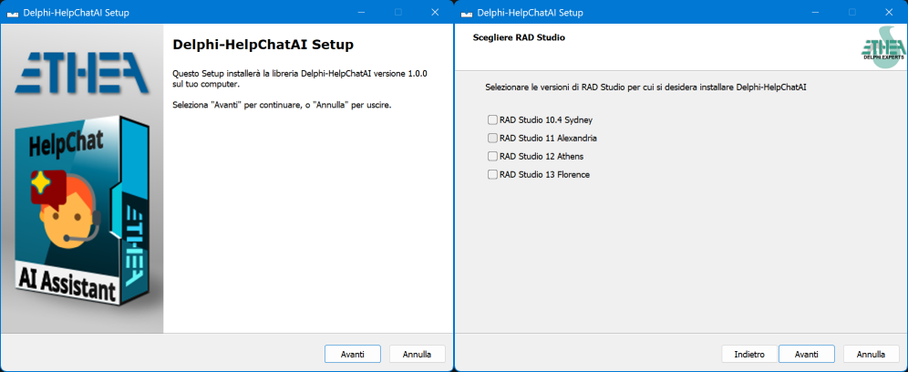

Related links: https://www.embarcadero.com/ - https://learndelphi.org/
Your users do not read the manual: they ask. HelpChatAI puts a chat bubble in the corner of
your application, answers “how do I export this grid?” from your own documentation, and
knows which screen the user is on while answering. F1 opens it, through the standard Delphi
help system, so the HelpKeyword you already wrote keeps working.
| Component | Description |
|---|---|
TVclHelpChatAI is the VCL component: drop it on the main form, set Active, and you have the bubble, F1 contextual help and the chat panel (a WebView2 TEdgeBrowser), either in its own tool window or embedded in a container of yours. Colours follow the active VCL style |
|
TFmxHelpChatAI is the FireMonkey twin (Delphi 12+): same settings, same engine, the chat in a TWebBrowser. F1 through the host form's OnKeyDown, light/dark theme instead of VCL styles. Available only for Delphi 12 and 13 |
help-index.json) from the Markdown pages of your
manual, with the HelpIndexBuilder tool.HelpKeyword/HelpContext of the focused control, the active tab.docsearch finds the right page offline and quotes it, with no API
key at all; claude, openai and gemini read the pages the retriever found and answer
from those, citing the source and saying when they do not know.The engine knows nothing about the UI: it runs inside your application or on a HelpChatAI server, chosen in a configuration file, so the model API key never has to reach the user's machine.
Provider |
Needs | Streams | Actions |
|---|---|---|---|
docsearch |
the documentation index, no key | no | no |
claude |
ANTHROPIC_API_KEY |
yes | yes |
openai |
OPENAI_API_KEY, nothing for a local model |
yes | yes |
gemini |
GEMINI_API_KEY |
yes | yes |
openai is wider than its name: Chat Completions is the API that Azure OpenAI, Groq,
OpenRouter, Mistral, DeepSeek, Ollama and LM Studio also speak, so BaseUrl and Model are
enough to point the same provider at any of them — including a model running on the user's own
machine, where nothing leaves the PC.
An “Installer” ready to use is located in the Release area: Download the Installer.
The Installer automatically detects your Delphi versions, installs sources, builds and installs packages and adds source paths.

To do it by hand instead:
packages/ — Delphi13,
Delphi12, Delphi11 or Delphi10.4dclHelpChatAIVcl (and
dclHelpChatAIFmx, then add source and Ext/MarkdownProcessor/source to the library path.Tools/Build_Packages.cmd [Delphi13|Delphi12|Delphi11|Delphi10.4|all] builds them from a
command line.
Ship WebView2Loader.dll (Redist/WebView2/x86|x64) next to your executable; the WebView2
runtime itself is already part of Windows 11 and of every machine with Edge.
Follow the Project Site to learn how to add an AI help assistant to your Delphi application, and how to make its answers good.
| Page | What you find |
|---|---|
| Quick Start | From an empty form to a working chat |
| The VCL component | Bubble, F1, embedding, dictation, the design-time preview |
| The FMX component | What FireMonkey does differently |
| Providers | The five of them, their settings, writing your own |
| The documentation index | Building help-index.json, and the pages shown inside the panel |
| Actions | An assistant that does things, safely |
| Running the engine on a server | When the API key must not be on the user's machine |
| Configuration | helpchatai.json, and checking a configuration |
| Security and privacy | What travels, where, and what never does |
| Framework | Versions | Verified |
|---|---|---|
| Engine (RTL only) | Delphi 10.4 Sydney → 13 Florence | packages built with each compiler |
VCL (TEdgeBrowser) |
Delphi 10.4 → 13 | built on all four, run on 13 |
FMX (TWebBrowser) |
Delphi 12 → 13 | built on both, run on Windows |
FireMonkey compiles for macOS, iOS and Android, but only Windows has been tried so far.
One folder per Delphi version, the same .dpk for all of them.
| Package | Requires | Contents |
|---|---|---|
HelpChatAI (runtime) |
rtl, MarkdownProcessor | the engine, the index builder, the panel page |
HelpChatAIServer (runtime) |
HelpChatAI, Indy | the transports: local server, remote server, remote client, host channel |
HelpChatAIVcl (runtime) |
HelpChatAIServer, vcl, vcledge | TVclHelpChatAI, the chat control, VCL style theming |
dclHelpChatAIVcl (design-time) |
HelpChatAIVcl, designide | palette, splash and About box, component editor with the live preview, property editors |
HelpChatAIFmx (runtime) |
HelpChatAIServer, fmx | TFmxHelpChatAI and its chat control |
dclHelpChatAIFmx (design-time) |
HelpChatAIFmx, designide | palette, component editor with the configuration check |
Demos/Projects has three applications that open with any supported Delphi: a console one that
drives the engine from the command line, and the VCL and FMX ones, two-screen applications
whose tabs carry the HelpKeyword of two pages of a real Italian manual — press F1 on each.
Test/Delphi13/HelpChatAITests.dproj is a DUnitX suite of 238 tests that runs without
network: store, worker pool, cancellation, index scoring, Markdown safety, the SSE parsing and
request building of each model provider, the configuration check, both transports over real
HTTP, and the actions from a real worker thread.
Test\Bin\Win32\HelpChatAITests.exe --exitbehavior:Continue23 Oct 2026: ver. 1.0.0
docsearch (local documentation index, no key needed), claude (Anthropic), openai (Chat Completions, and with it Azure, Groq, OpenRouter, Mistral, Ollama…) and gemini (Google): all three models stream and can call the actions of the application, grounded on the documentation and on the screen contextTVclHelpChatAI (TEdgeBrowser) and TFmxHelpChatAI (TWebBrowser): chat bubble, F1 contextual help, chat panel embeddable in any container, colours from the VCL stylehelp-index.json) from a folder of Markdown filesApache License 2.0 — Copyright (c) 2026 Ethea S.r.l.
The Ethea MarkdownProcessor, which the engine package requires, keeps its own license (Apache 2.0 / BSD, see Delphi-MarkdownProcessor).